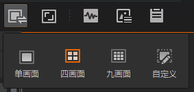
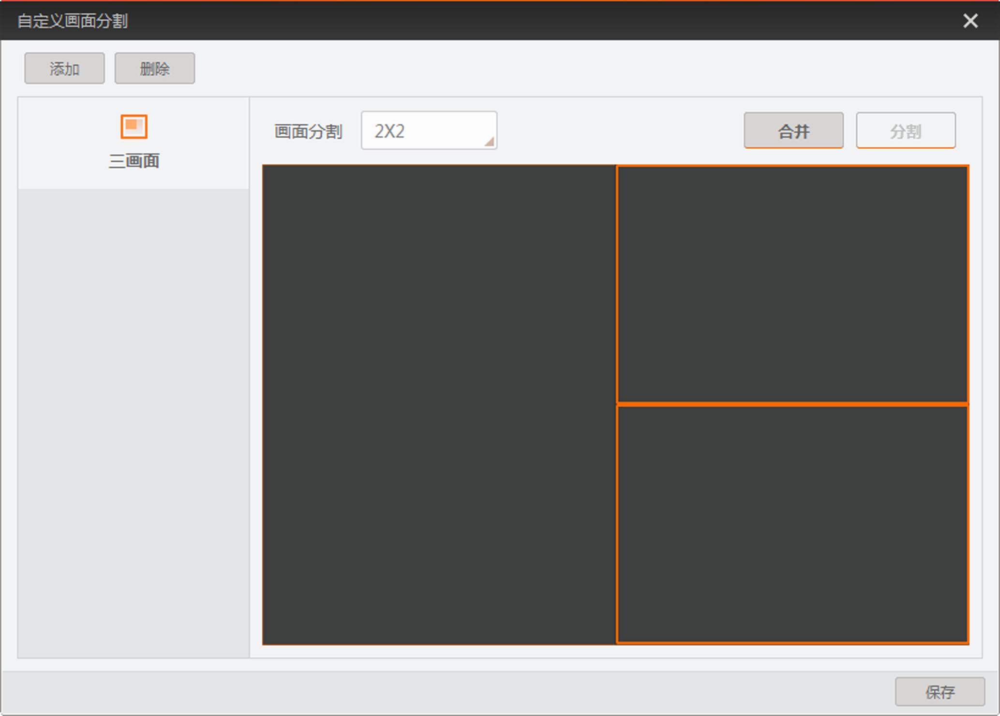

zh-CN
设置自定义画面布局
客户端提供单画面、四画面和九画面三种画面布局，若不满足实际需求，也可自定义设置画面布局。
点击控制工具条的，界面如下图所示。

图 1 画面布局
说明：
自定义画面布局最多可设置4个。
点击，进入自定义画面窗口。
点击
添加
，弹出自定义画面分割命名的窗口。
设置画面布局的名称并
确定
。
画面分割
参数下拉选择最接近需求的画面数量，共用2x2、3x3、4x4三种选项。
说明：
每个自定义画面最大可设置为十六画面。
根据需求选择相邻画面进行
合并
，也可选择已合并画面进行
分割
来完成画面布局的调整，如下图所示。

图 2 设置自定义画面布局
点击
保存
完成自定义画面的新增。
可选操作：
对无效的自定义画面布局，可选中并
删除
。
图像数据采集与预览
开启单画面预览
开启多画面预览
本地文件预览
全屏预览
设置自定义画面布局
抓图和录像
设置十字辅助线
设置网格
查看取流状态
查看水印信息
查看直方图
更多功能